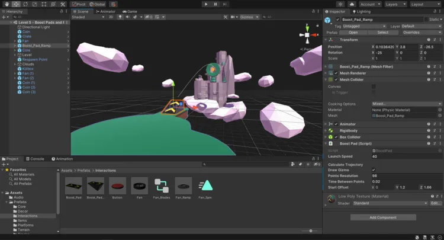

Why C++ is Bad for Video Game Engine Scripting
August 2024 - 4 minute read
95% of game engines are built in C and C++. Despite the core of most game engines being developed in C++, many game engines avoid it for game logic programming. But why is this? First, we need to understand how a game engine works.

How Game Engines are Made
Building a game engine can be broken down into several core systems. These include the rendering engine, physics engine, sound engine, scripting system, and more. Each of these systems typically has different performance requirements and coding challenges.
Why is C++ used for Game programming
Actually you can build a Game Engine in any language of your choice, However Game Engines utilizes graphics api's and all graphics api's are written in C and works natively with C++.
Challenges with C++ for Scripting
C++ is a powerful language, but it has its downsides when used for scripting in game engines:
- Compile Times: C++ compile times can be lengthy, slowing down iteration and testing. so using another language for scripting allows you to only run the sides that changes and not compile the entire engine from scratch. However if still use to use C++ for your engine scripting and you want to avoid compile time you can use livecpp which update changes without recompilling.
- Memory Management Complexity: Unlike managed languages, C++ requires manual memory management, which can lead to memory leaks and bugs that are difficult to track down. When using a seperate language for scripting bugs detected will throw an error and not crash the entire program like c++ would. However tools like web assembly with C++ for scripting fixes memory flaws.
- Verbosity: C++ code tends to be more verbose, making it harder for designers and non-programmers to write or adjust game scripts.
- Lack of Dynamic Typing: Many scripting languages use dynamic typing, which can speed up development for game logic where strict type-checking isn’t as critical.
Common Alternatives for Game Scripting
Due to these limitations, many game engines choose scripting languages that are easier to use for game logic. Common choices include:
- Python: Easy to learn and integrates well with C++ via bindings, often used in prototyping and AI scripting.
- Lua: Lightweight and fast, Lua is popular in engines like Unity for its simplicity and performance.
- C#: Used in Unity, C# strikes a balance between performance and ease of use, offering faster compilation and managed memory.
Conclusion
While C++ remains essential for performance-critical parts of a game engine, using it for scripting adds significant complexity without much benefit. By combining C++ for the core engine and a high-level scripting language, game developers get the best of both worlds: high performance and ease of use.The main reason why C++ can't ever be a scripting language is because it's not an interpreted language but rather a compiled language, Although tools like cling which is an interpreted C++ exist (C++ with an interpreter instead of compiler).